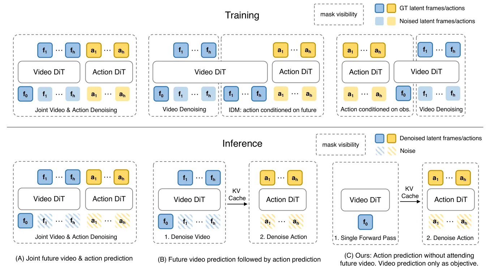
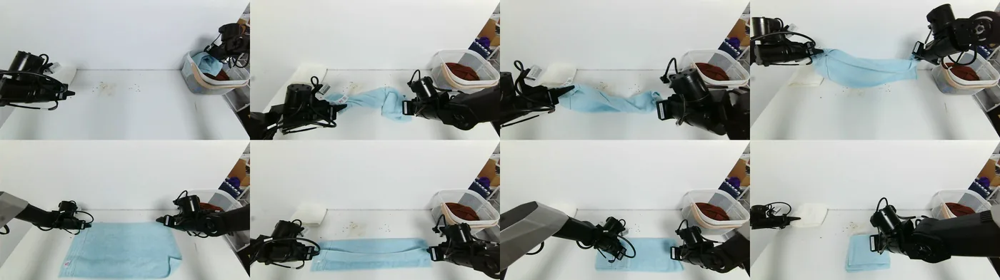

Wan2.2-5B 视频 DiT + 1B ActionDiT · 共享注意力 MoT · H=32 / 每 chunk 9 帧 · 训练共训、推理删未来分支 · 190ms
| 项 | 内容 |
|---|---|
| 标题 | Fast-WAM: Do World Action Models Need Test-time Future Imagination? |
| 作者 | Tianyuan Yuan, Zibin Dong, Yicheng Liu, Hang Zhao |
| 机构 | IIIS, Tsinghua University；Galaxea AI |
| 时间 | v1 2026-03-17；v2 2026-03-23（本页按 v2 核对） |
| venue | arXiv preprint（cs.CV / cs.AI）。论文未给正式会议或期刊 |
| 链接 | arXiv:2603.16666 ｜ HTML v2 ｜ 项目页 ｜ 代码 |
| 证据级别 | L3：论文全文（含 Table 1/2、Eq.1–9、附录 Table 3）+ 官方仓库的模型代码、训练 config、RoboTwin 部署 config 三方对齐。但训练与数字未复现 |
| 本页未核实项 | 真机毛巾折叠的具体成功率/完成时间（论文只在 Figure 4 给散点，正文未给数值表）；训练总 GPU 小时、数据规模（论文未给）；λ（论文未给具体值，代码默认 1.0） |
分级口径：L1 只读到摘要/二手转述；L2 全文（含附录表、公式）逐字核对但无代码；L3 全文 + 官方代码/配置可复核实现细节（≠ 已复现数字）。
| 问题 | 论文的答案 | 证据 |
|---|---|---|
| 推理时要不要显式生成未来？ | 不需要；单次前向把首帧编码成世界表征即可 | RoboTwin 91.8 vs Joint 90.6 / IDM 91.3；LIBERO 97.6 vs 98.5 / 98.0 |
| 那 WAM 的增益从哪来？ | 训练时预测未来视频这一目标对表征的塑形 | 去掉共训：RoboTwin 83.8（−8.0）、LIBERO 93.5（−4.1）、真机 10% |
| 快多少？ | 190ms，比 imagine-then-execute 快 4 倍以上 | IDM 810ms（同一张 5090D V2） |
| 要 embodied 预训练吗？ | 不要；这是本文最“反直觉”的效率结论 | LIBERO 97.6 / RoboTwin 91.8 均标 Embodied PT. = ✗ |
论文的出发点不是“再做一个 WAM”，而是把一个问题问清楚。Introduction 第 2 段把两个候选原因写得很精确：
原文：“Most existing WAMs follow an imagine-then-execute paradigm: they first generate future observations, then predict actions conditioned on the imagined future. While intuitive, this design incurs substantial test-time latency due to iterative video denoising.”
译文：现有大多数 WAM 采用“先想象、后执行”范式：先生成未来观测，再以想象出的未来为条件预测动作。这个设计很直觉，但由于迭代式视频去噪，它在测试时带来可观的延迟。
原文：“More fundamentally, it remains unclear whether explicit future imagination is actually necessary for strong action performance. The effectiveness of WAMs may stem from two distinct sources: (1) the video prediction objective during training, which may help the model acquire stronger physical priors and action-conditioned representations, and (2) explicit future generation during inference, which may provide additional foresight for action prediction.”
译文：更根本地说，尚不清楚显式的未来想象对强动作性能是否真的必要。WAM 的有效性可能来自两个不同来源：(1) 训练时的视频预测目标，它可能帮助模型获得更强的物理先验与动作条件表征；(2) 推理时的显式未来生成，它可能为动作预测提供额外的预判。
所以这篇论文的“问题定义”本身就是贡献：(1) 与 (2) 在现有系统里永远是耦合的（同一个模型既从未来视频学习、又在测试时合成未来），因此观测到的增益无法归因。要拆开，就必须造一个“训练共训、推理不生成”的模型，并在同一套骨干/分词/训练配方下造出它的对照组。
出处：§1 Introduction 第 2–3 段；§3.3 Controlled Variants（‘keeping the backbone, tokenization, and training recipe as aligned as possible’）。
token 数推导：VAE 空间 8×（wan_video_vae.py 的 dim_mult=[1,2,4,4] + 三级下采样）→ 224×448 变 28×56；patch 1×2×2 → 每帧 14×28 = 392；9 帧 = 3528。动作每步 1 个 token（Linear(7→1024)），共 32 个。此为本页按官方 config + 代码结构推算，论文正文未列 token 数。
原文：“Instead of using a pretrained video generation model to iteratively synthesize future frames during inference, Fast-WAM repurposes a pretrained video Diffusion Transformer (DiT) as a single-pass world encoder for action generation.”
译文：Fast-WAM 不再在推理时用预训练视频生成模型迭代合成未来帧，而是把预训练视频 DiT 改造成一个单次前向的世界编码器，用于动作生成。
原文：“During training, the video prediction objective shapes the video DiT to encode physically meaningful motion and interaction structure. During inference, the video DiT processes the observation context in a single forward pass and provides latent world representations for action denoising, avoiding explicit future video denoising and enabling efficient real-time control.”
译文：训练时，视频预测目标把视频 DiT 塑造成能编码有物理意义的运动与交互结构的模型；推理时，视频 DiT 用单次前向处理观测上下文，为动作去噪提供潜空间世界表征，从而避免显式的未来视频去噪，并实现高效的实时控制。
形式化只差一行积分。imagine-then-execute 写的是对未来做边缘化，Fast-WAM 写的是直接把动作条件在“单次编码出的表征”上：
原文：“Formally, let z(o, l) denote the latent world representation produced by the video backbone conditioned on the current context. Fast-WAM uses this representation to parameterize the action distribution … The key difference from imagine-then-execute WAMs is that z(o, l) is obtained by a single forward encoding pass, rather than by explicitly sampling or denoising future observations at inference time.”
译文：形式化地，令 z(o, l) 表示视频骨干在给定当前上下文后产生的潜空间世界表征。Fast-WAM 用该表征来参数化动作分布……与 imagine-then-execute 类 WAM 的关键区别在于：z(o, l) 由一次前向编码得到，而不是在推理时显式采样或去噪未来观测。
而“为什么删掉分支不掉点”这件事，论文给的答案是掩码，而不是“未来信息会泄漏进动作”这种模糊说法：
原文：“Crucially, action tokens cannot attend to future video tokens, and the clean first-frame tokens do not attend to any other tokens. This ensures that both video modeling and action prediction are grounded in the same visual context while preventing future information from leaking into the action branch.”
译文：关键在于：动作 token 不能关注未来视频 token，而干净的首帧 token 也不关注任何其它 token。这保证了视频建模与动作预测都建立在同一视觉上下文之上，同时防止未来信息泄漏到动作分支。
出处：§1 Introduction 第 4 段；§3.1 Problem Formulation（Eq.3–4 及其后一段）；§3.2 Architecture 第 3 段。
接口定义本身就是论文最“可实施”的部分，因为 token 分组直接决定了掩码和推理图：
原文：“We organize the input tokens into three groups: clean latent tokens of the first observation frame, which serve as the shared visual anchor; noisy latent tokens of future video frames, which are used only during training for video modeling; and action tokens, which are processed by the action expert for action generation.”
译文：我们把输入 token 组织成三组：第一个观测帧的干净潜变量 token，作为共享的视觉锚点；未来视频帧的带噪潜变量 token，仅在训练时用于视频建模；以及动作 token，由动作专家处理以生成动作。
原文：“At inference time, Fast-WAM removes the future video branch entirely: only the clean first-frame latent tokens are retained and passed through the video backbone once to produce latent world features for the action expert.”
译文：推理时，Fast-WAM 把未来视频分支整体删除：只保留干净的首帧潜变量 token，让它们通过视频骨干一次前向，为动作专家产生潜空间世界特征。
| token 组 | 训练时 | 推理时 | 论文 / 代码证据 |
|---|---|---|---|
| 首帧 clean latent（视觉锚点） | 可见所有条件；不 attend 其它 token | 唯一保留的组，送进视频分支 | §3.2；latents[:, :, 0:1] = first_frame_latents（训练时把首帧写回干净值），infer_action 只 encode 单张图 |
| 未来 noisy latent（8 帧） | 视频分支内部双向 + 可看首帧；只用于视频损失 | 不实例化 | §3.2；视频损失只算未来帧（训练代码里裁掉第 0 帧） |
| 动作 token（32 个） | 动作分支内部双向 + 可看首帧；不可看未来视频 | 去噪 10 步产出 32 步动作 | §3.2 掩码段；mask[video:, video:] 全 True、mask[action, future] 保持 False |
| 语言 / 本体（cross-attention 上下文） | T5 128 token；proprio 经 Linear 变成 1 个额外 token 拼在 context 末尾 | 同左 | §3.2（T5 cross-attn）；代码 _append_proprio_to_context。注意：论文正文未提 proprio token，这是代码事实 |
| 项 | 论文 | 官方 config / 代码 |
|---|---|---|
| 骨干 | Wan2.2-5B 视频 DiT + 1B action expert，合计 6B | model_id: Wan-AI/Wan2.2-TI2V-5B；action DiT hidden_dim: 1024、30 层 |
| 视频 DiT | —（论文未列维度） | hidden_dim 3072、30 层、24 头、head 128、patch [1,2,2]、in/out 48 |
| 动作块 H | 32；视频帧 9（4× 时间降采样） | action_video_freq_ratio: 4 # 32 action, 9 video frames（num_frames: 33） |
| 文本编码 | 内置 T5，cross-attention 注入所有 token | tokenizer_max_len: 128、context_len: 128 |
| 推理去噪步数 | 10 步，CFG = 1.0 | RoboTwin 部署配置 num_inference_steps: 10、text_cfg_scale: 1.0（函数签名默认 20，须显式设 10） |
| 调度 | logit-normal 时间采样（沿用 Wan2.2） | video_scheduler.train_shift 5.0、action_scheduler.train_shift 1.0、1000 步 |
| 损失权重 λ | 论文只写“λ 平衡两项”，未给数值 | loss_lambda_video = 1.0、loss_lambda_action = 1.0（默认） |
| 优化 | AdamW lr 1e-4、wd 0.01、cosine、混合精度、梯度裁剪 1.0 | 任务配置 learning_rate: 1e-4、weight_decay: 1e-2、lr_scheduler_type: cosine |
| 训练预算 | LIBERO 20k 步；RoboTwin 30k 步；真机 30k 步 | 任务 config 的 max_steps 置空、按 epoch 控制；步数取论文 |
| 数据 | LIBERO 4 套 × 500 演示；RoboTwin 2,500 干净 + 25,000 随机化；真机 60h 遥操作（Galaxea R1 Lite） | libero_2cam：2 路 224×224、动作 7 维（EEF 6 + 夹爪 1）、proprio 8 维 |
| 多相机 | 多相机图像先拼成单图再进 VAE | concat_multi_camera: horizontal、video_size: [224, 448] |
| 变体 | 结构差别 | 回答什么问题 |
|---|---|---|
| Fast-WAM | 训练共训、推理删未来 | “训练有视频、推理不生成”能不能打 |
| Fast-WAM-Joint | 视频与动作 token 一起去噪（允许互相看见） | 与联合建模范式比（inference 更贵） |
| Fast-WAM-IDM | 先生成未来视频，再以其为条件出动作；训练时对真值视频 token 加噪 p=0.5 | 与“先视频后动作”范式比（190ms vs 810ms） |
| w.o. video co-train | 架构与推理完全不变，只删视频损失 | 视频共训本身贡献多少 |
出处：§3.3；§4.1 实现细节（IDM 的 p=0.5 噪声增强）；官方 configs/model/ 下四个模型配置俱全：fastwam.yaml、fastwam_joint.yaml、fastwam_idm.yaml、fastwam_optional_idm.yaml。
一行物理意义：λ=1 时，动作分支学“怎么动”，视频分支学“动了之后画面会变成什么样”；两者共用同一套注意力，所以“画面会怎么变”的知识通过共享表征进入动作分支——而不是通过推理时生成未来帧。
评测口径说明：本文用成功率与完成时间（真机还看完成时间），不用 SPL 这类路径效率指标，因此没有第三条评价公式。
映射到代码（逐项）：
| 公式 | 代码位置 | 物理意义 |
|---|---|---|
| Eq.5 插值 yt | scheduler.add_noise(latents, noise, t)（视频）／add_noise(action, noise, t)（动作） | 同一个 t 决定“加了多少噪声”，也决定模型看到的是“从干净到纯噪声”的哪一段 |
| Eq.6 速度场目标 (ε − y) | scheduler.training_target(...) → F.mse_loss(pred, target) | 预测的是“从数据指向噪声”的速度，而不是噪声本身；推理时沿反方向积分回数据 |
| Eq.9 总损失 | loss_total = loss_lambda_video * loss_video + loss_lambda_action * loss_action | 两个分支各占一份梯度；λ 是“世界知识”和“动作拟合”的配比 |
| 视频损失只算未来帧 | 首帧融合进 latent 的配置下，训练代码里 pred_video = pred_video[:, :, 1:]、target_video = target_video[:, :, 1:] | 首帧是给定的条件，不该被“重建”；这才是“预测未来”而不是“重建现在” |
出处：§3.2 Training objective（Eq.5–9）；官方 src/fastwam/models/wan22/fastwam.py 的 training_loss（对视频/动作分别采样 t、加噪、算 MSE、按 pad 掩码归一）。
原文：“On RoboTwin, Fast-WAM achieves 91.8% success rate, exceeding all baselines without embodied pretraining and remaining highly competitive with the strongest pretrained WAMs.”
译文：在 RoboTwin 上，Fast-WAM 取得 91.8% 的成功率，超过所有未做具身预训练的基线，并且与最强的带预训练 WAM 仍然非常有竞争力。
原文：“In contrast, removing video co-training causes a dramatic degradation on both metrics: Fast-WAM without video co-training drops to only 10% success rate and also requires the longest completion time among all methods.”
译文：相反，去掉视频共训会让两个指标同时剧烈退化：不做视频共训的 Fast-WAM 掉到只有 10% 成功率，并且是所有方法中完成时间最长的。
| 方法 | Embodied PT. | Clean | Rand. | Average |
|---|---|---|---|---|
| π0 | ✓ | 65.92 | 58.40 | 62.2 |
| π0.5 | ✓ | 82.74 | 76.76 | 79.8 |
| Motus | ✓ | 88.66 | 87.02 | 87.8 |
| Motus from WAN2.2 | ✗ | 77.56 | 77.00 | 77.3 |
| LingBot-VA | ✓ | 92.90 | 91.50 | 92.2 |
| LingBot-VA from WAN2.2 | ✗ | 80.60 | — | 80.6 |
| Fast-WAM | ✗ | 91.88 | 91.78 | 91.8 |
| Fast-WAM-Joint | ✗ | 90.84 | 90.32 | 90.6 |
| Fast-WAM-IDM | ✗ | 91.16 | 91.34 | 91.3 |
| Fast-WAM w.o. video co-train | ✗ | 82.76 | 84.80 | 83.8 |
结论：不带 embodied 预训练的 Fast-WAM（91.8）超过了带预训练的 Motus（87.8），与带预训练的 LingBot-VA（92.2）只差 0.4；而只删视频共训就掉到 83.8。三个“有视频”的变体（91.8 / 90.6 / 91.3）彼此差不到 1.2 个点——说明“推理时怎么用未来”不是主要矛盾。
| 方法 | Embodied PT. | Spatial | Object | Goal | Long | Average |
|---|---|---|---|---|---|---|
| OpenVLA | ✓ | 84.7 | 88.4 | 79.2 | 53.7 | 76.5 |
| π0 | ✓ | 96.8 | 98.8 | 95.8 | 85.2 | 94.1 |
| π0.5 | ✓ | 98.8 | 98.2 | 98.0 | 92.4 | 96.9 |
| LingBot-VA | ✓ | 98.5 | 99.6 | 97.2 | 98.5 | 98.5 |
| Motus | ✓ | 96.8 | 99.8 | 96.6 | 97.6 | 97.7 |
| Fast-WAM | ✗ | 98.2 | 100.0 | 97.0 | 95.2 | 97.6 |
| Fast-WAM-Joint | ✗ | 99.6 | 99.4 | 98.2 | 96.8 | 98.5 |
| Fast-WAM-IDM | ✗ | 98.8 | 97.8 | 97.8 | 97.6 | 98.0 |
| Fast-WAM w.o. video co-train | ✗ | 89.2 | 99.2 | 95.4 | 90.0 | 93.5 |
结论：平均 97.6 高于 π0.5（96.9）、低于 Joint（98.5）与 LingBot-VA（98.5）；但去掉共训掉到 93.5，且掉点极不均匀——Spatial 98.2→89.2（−9.0）、Long 95.2→90.0（−5.2），而 Object 只掉 0.8。这与“视频共训提供的是空间/时序连续性先验”一致。
| 项 | 结果 | 来源 |
|---|---|---|
| 任务 | Galaxea R1 Lite 上的长程毛巾折叠；60h 遥操作演示；30k 步训练 | §4.2 Real-World Evaluation |
| 成功率 | 带预训练的 π0.5 仍最强；Fast-WAM 系列“可比”，其中 IDM 成功率最高、Fast-WAM 完成时间更好 | §4.3.3（具体数值论文未给，只在 Figure 4 散点） |
| 去共训 | 10% 成功率，且完成时间最长 | §4.3.3 |
| 延迟 | Fast-WAM 190ms；Fast-WAM-IDM 810ms（≈4.3×） | §4.3.3；摘要“over 4× faster” |
| 硬件 | 单卡 NVIDIA RTX 5090D V2 32GB | §4.1 |
结论：真机上“共训 vs 不共训”的差距（10% 对可用）比“想象 vs 不想象”的差距大得多；而 190ms 与 810ms 的差距是部署分水岭——后者已接近/超过很多操作任务的单步预算。
这一节的代码全部来自官方仓库（yuantianyuan01/FastWAM），行号对应 src/fastwam/models/wan22/fastwam.py。为聚焦主干，省略了 pad 掩码与异常检查。
| 变量 | 形状 / 类型 | 物理意义 | 出处 |
|---|---|---|---|
video | [B, 3, 33, 224, 448] | 2 路相机水平拼成的 33 帧原始视频（4× 抽帧后 → 9 帧） | configs/data/libero_2cam.yaml |
input_latents | [B, 48, 9, 28, 56] | VAE 潜变量：9 个时间步，每帧 28×56 空间网格 | build_inputs / VAE |
first_frame_latents | [B, 48, 1, 28, 56] | “现在”的干净表征，训练与推理都被保留为锚点 | L354、L541-542 |
action | [B, 32, 7] | 32 步动作块；7 维 = EEF 位姿 6（前 6 维取增量）+ 夹爪 1（绝对值） | L306-309；libero_2cam 的 delta_action_dim_mask |
noisy_action | [B, 32, 7] | 同形状的加噪版本，作为动作专家的输入 | L544-550 |
proprio | [B, 8]（LIBERO） | 本体状态：EEF 位姿 6 + 夹爪 2；只取时间维第 0 帧 | L363-372（proprio[:, 0, :]） |
context | [B, 128(+1), 4096] | T5 文本嵌入 + 1 个 proprio token（cross-attn 的 key/value） | L224-246、tokenizer_max_len: 128 |
attention_mask | [3560, 3560] bool | 3528 视频 token + 32 动作 token 的可见性矩阵 | L397-418、L556-561 |
latents_action（推理） | [1, 32, 7] | 从纯噪声出发，10 步去噪后就是动作块 | L1027-1032 |
# 出处：src/fastwam/models/wan22/fastwam.py，training_loss()；行号为官方 main 分支
noise_video = randn_like(input_latents) # 未来的“另一种可能”，作为回归目标的方向
t_v = video_scheduler.sample_training_t(...) # logit-normal 采样：偏向中间噪声段（最难学的部分）
latents = video_scheduler.add_noise(input_latents, noise_video, t_v) # y_t = (1-t)y + t*eps
target_video = video_scheduler.training_target(...) # eps - y：预测“往噪声方向走的速度”
if first_frame_latents is not empty:
latents[:, :, 0:1] = first_frame_latents # 首帧写回干净值：它是条件，不是要预测的东西
noise_action = randn_like(action) # 动作同样走 flow matching（不是 DDPM 的离散步）
t_a = action_scheduler.sample_training_t(...)
noisy_action = action_scheduler.add_noise(action, noise_action, t_a)
target_action = action_scheduler.training_target(action, noise_action, t_a)
attention_mask = build_mot_attention_mask(...) # 关键：动作 → 未来视频 的位一直保持 False
pred_video, pred_action = joint_denoise_core(latents, noisy_action, ..., attention_mask)
if first_frame_latents is not empty:
pred_video = pred_video[:, :, 1:] # 视频损失只算未来 8 帧（不重建“现在”）
target_video = target_video[:, :, 1:]
loss_video = weighted_mse(pred_video, target_video) # 未来画面对不对：世界模型的监督
loss_action = weighted_mse(pred_action, target_action) # 动作对不对：策略的监督
loss_total = 1.0 * loss_video + 1.0 * loss_action # 论文的 lambda：配置里两个都是 1.0读法：这段代码解释了“为什么删推理分支不掉点”——动作 token 在训练时就已经看不到未来 token，所以推理时把未来 token 整组拿掉，改变的只是计算量，不是动作的条件分布。
# 出处：同文件 infer_action()，L979-1159；部署超参见 experiments/robotwin/fastwam_policy/deploy_policy.yml
latents_action = randn(1, action_horizon, 7) # 32 步动作，从纯噪声起步
first_frame_latents = vae.encode(input_image) # 只有 1 帧：这一步决定了“没有视频去噪”
video_tokens = video_expert.prepare(first_frame_latents, timestep=0) # t=0：把首帧当 clean 条件
cache_k, cache_v = mot.prefill_video_cache(video_tokens, ...) # 视频分支只跑这一次前向
for step_t, step_delta in action_scheduler.build_inference_schedule(steps=10):
pred = action_expert_with_video_cache(latents_action, step_t, cache_k, cache_v)
# ^ 每步只跑 1B 动作专家 + 对视频 KV cache 的 cross-attention
latents_action = action_scheduler.step(pred, step_delta, latents_action)
return latents_action # [1,32,7] 动作块 → 部署时每 8 步重规划一次物理意义：190ms ≈ “1 帧视频编码 + 10 次 1B 专家去噪”；对照组 IDM 的 810ms ≈ “9 帧视频逐步去噪 + 同样的动作去噪”。这 4 倍差距不是工程优化，而是把未来视频生成的整段计算删掉的结构性收益。
infer_action 签名默认 num_inference_steps=20，论文/部署配置是 10——直接调用函数而不覆盖参数，延迟会翻倍。proprio[:, 0, :]，历史被折叠成 1 个 token（LIBERO 是 8 维）。论文正文完全没提 proprio，这是实现细节，会直接影响“速度信息够不够”。action_horizon % (num_frames − 1) == 0 否则代码直接报错；改帧数必须同步改动作块或频率比（ratio=4）。replan_steps: 8，不是把 32 步一次执行完。这解释了“32 步 chunk”与“4 动作/视频帧”的对应关系，也意味着实际控制频率 ≈ 每 8 个仿真步一次模型调用。A：因为动作 token 在训练时就被禁止看未来 token（掩码），推理删分支不改变动作的条件分布，只删掉了一段对动作没有输入贡献的计算。反证：如果动作真的在用未来信息，删掉必然掉点；而实验里 Fast-WAM（91.8）反而略高于 Joint（90.6）与 IDM（91.3）。另一条反证是“去掉共训”那条：架构与推理一字不改，只删训练损失，RoboTwin 就掉到 83.8。所以“未来视频的价值在参数里，不在推理图里”。
A：算一下就清楚。IDM 要先把未来视频去噪出来（每步都要跑 5B 视频 DiT，9 帧 = 3528 token，10 步），再把结果喂给动作分支；Fast-WAM 的视频分支只做一次 1 帧（392 token）的前向并缓存 KV，随后 10 步全部只跑 1B 动作专家。实测 810ms → 190ms ≈ 4.26×，与摘要“over 4× faster”一致。注意这不是“更快的视频模型”，而是“视频模型被调用 1 次而不是 10 次×9 帧”。
A：LIBERO 的分项给出了线索：Spatial 98.2→89.2（−9.0）、Long 95.2→90.0（−5.2）、Goal 97.0→95.4（−1.6）、Object 100.0→99.2（−0.8）。掉得最狠的正是“需要空间关系与长时序连续性”的两套任务——这恰好是“预测未来画面”这个目标最直接塑造的能力；而 Object 这种“认得出物体就能做”的任务几乎不受影响。真机上更极端：10% 成功率，说明在可变形物+长程任务上，没有共训的表征几乎不可用。
A：不能——这正是“两件事”里的另一件。论文的消融是“架构不变、只删视频损失”，不是“只训视频”。而且从损失权重看（配置里 L_act 与 L_vid 都是 1.0），动作监督始终在场。反例逻辑：如果只训视频就能出动作，那 IDM 变体（先生成未来再出动作）应该最强，但实际上它是 810ms 且成功率不高于 Fast-WAM。所以正确表述是：视频共训是“表征红利”，动作损失是“接口落地”，两者不可互换。
A：三个前提要先满足。① 动作接口：论文只做了 7 维 EEF+夹爪（前 6 维 delta、夹爪绝对），换关节空间/双手/底盘要改 action_dim 与 processor，H=32 与 4× 频率比也要重算；② 观测：2 路相机水平拼接成 224×448，相机数量变化会改变 token 数与 VAE 输入尺寸；③ proprio：只取 1 帧、8 维，如果你的状态含速度/力矩历史，需要自己改 _append_proprio_to_context 与数据管线。此外 190ms 是 5090D 上的数，换端侧卡要重新测。
原文：“Across simulation benchmarks and real-world robotic tasks, Fast-WAM achieves strong performance without embodied pretraining while running in real time. More importantly, controlled comparisons show that Fast-WAM remains competitive with imagine-then-execute variants, whereas removing video co-training leads to a much larger degradation.”
译文：在仿真基准与真实机器人任务上，Fast-WAM 在不做具身预训练的情况下取得强性能，并且能实时运行。更重要的是，受控对比显示 Fast-WAM 与“先想象后执行”变体相比仍具竞争力，而去掉视频共训会带来大得多的性能退化。
| 环节 | 内容 |
|---|---|
| Problem | 现有 WAM 把“训练时的视频预测”和“推理时的未来生成”耦合在一起，导致无法判断增益来源；而 imagine-then-execute 的迭代去噪在测试时昂贵。 |
| Method | Fast-WAM：Wan2.2-5B 视频 DiT + 1B 动作 DiT 的共享注意力 MoT；训练用联合 flow matching（动作 32 步、未来 8 帧 latent、λ 加权）；结构化掩码让动作 token 看不到未来；推理只保留首帧、视频分支单次前向给出世界表征，动作去噪 10 步。另造 Joint / IDM / 去共训三个对照。 |
| Experiment | RoboTwin 91.8（Joint 90.6 / IDM 91.3 / 去共训 83.8），全部无 embodied 预训练；LIBERO 97.6（去共训 93.5，Spatial −9.0）；真机毛巾折叠可用、去共训仅 10%；延迟 190ms vs IDM 810ms（单卡 5090D V2）。 |
| Takeaway | ① WAM 的主要价值在训练端的视频共训，而非推理端的未来想象；② 只要训练时用掩码把“未来”挡在动作分支之外，推理就可以合法地把整条未来分支删掉，换来 4× 以上的速度；③ 因此“世界模型”可以退化成“世界编码器”，这对部署是决定性的；④ 边界要记住：单动作空间、单真机任务、单卡延迟、λ 未公开。 |


参考：arXiv:2603.16666 ｜ 项目页 ｜ 代码 ｜ 返回 wiki 索引 ｜ S2→S1→S0 指南